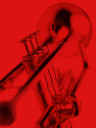

Extra Informatie
Een muziekinstrument is een constructie gebouwd met het doel muzikale tonen voort te brengen, of anderszins muziek te maken. Een muziekinstrument kan bestaan uit zeer verschillende materialen, en kan zeer verschillende vormen en afmetingen hebben, van een mondharp tot een kerkorgel.
Klik hieronder op de diverse tabbladen van de accordion om informatie over een bepaald instrument te verkrijgen.
Koperblazers
Koperblazers zijn de bespelers van de zogenaamde koperblaasinstrumenten of koperen blaasinstrumenten, zoals de trompet, hoorn en trombone. De sectie van koperblazers in een orkest wordt ook wel aangeduid als het koper. In sommige kringen wordt het Engelse woord brass gebruikt. De koperen blaasinstrumenten onderscheiden zich van andere blaasinstrumenten doordat de toon wordt gemaakt met de gespannen lippen in een kuipmondstuk.
Saxofoon
Een saxofoon is een blaasinstrument met een conische, meestal S-vormige buis, die voorzien is van kleppen. De saxofoon wordt niet tot de koperblazers gerekend, maar zoals alle riet-blaasinstrumenten tot de houtblazers. Saxofoons hebben een conische boring – ze worden van het mondstuk naar het bekeruiteinde toe breder. Het riet begint te trillen bij het blazen, zo ontstaat het geluid dat daarna door het andere deel van het instrument gaat. De drie grote delen van de saxofoon; het mondstuk, de hals, het klankgat. De saxofoon is een transponerend instrument en is uitgevonden door Adolphe Sax.
Trompet
De trompet is een blaasinstrument van de familie der koperblazers, waarbij het geluid ontstaat doordat de lippen die tegen het mondstuk geplaatst worden, met de adem in trilling worden gebracht.
Trombone
De trombone is een blaasinstrument dat tot het scherpe koper wordt gerekend. De naam stamt van het Italiaanse tromba met het suffix one en betekent dus "grote trompet". In de volksmond wordt dit instrument ook schuiftrompet genoemd, wat eigenlijk de naam van een ander koperinstrument is.
De trombone is familie van de trompet en in de meest voorkomende vorm (de tenortrombone) is zij tweemaal zo lang als de B♭-trompet. Een trombone bestaat uit drie onderdelen:
- een ketelvormig of V-vormig mondstuk,
- de coulisse, een lange cilindrische metalen U-vormige uitschuifbare buis,
- de bekersectie, die conisch uitloopt.